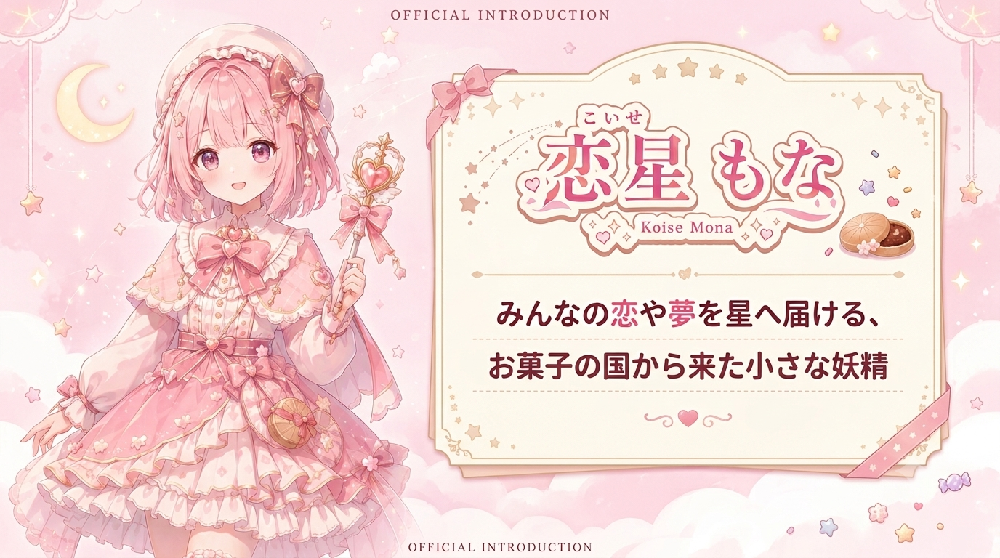

MONA
恋星 もな
— あなたの「好き」を、集めたい —
Concept
みんなの恋や夢を星へ届ける、お菓子の国から来た小さな妖精。
落ち着いた声のトークが持ち味で、深夜の雑談配信ではリスナーの心にそっと寄り添う。
Fan Name & Fan Mark
FN:もなっこ FM:❤⭐
Profile Data
- Birthday
- 7月7日
- Age
- ???(人間換算 18歳)
- Height
- 148cm
- 好きなもの
- もなか、星座観察、ゲーム
- Image Color
- ピンク
- 配信ジャンル
- 雑談、お歌、ASMR、ゲーム実況
Backstory
夜空には「恋星」という、人々の想いが星になる場所がある。
そこには「星菓子」という不思議なお菓子があり、その材料になるのが、人々の「ときめき」や「優しさ」。
もなは、人の「好き」「ときめき」「ありがとう」という気持ちが大好物で、それを集めて夜空へ届ける役目をしている。